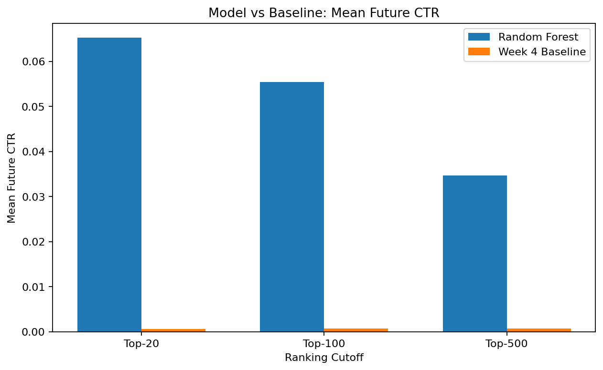
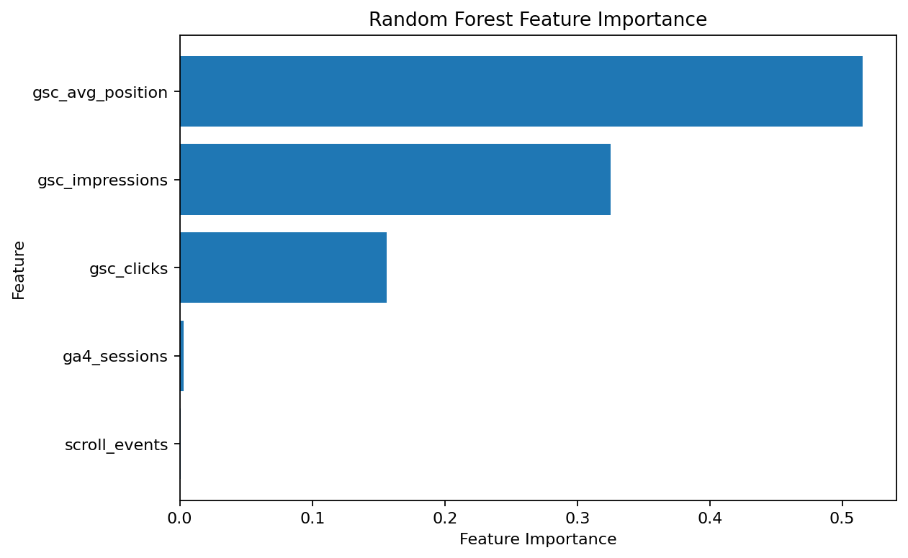
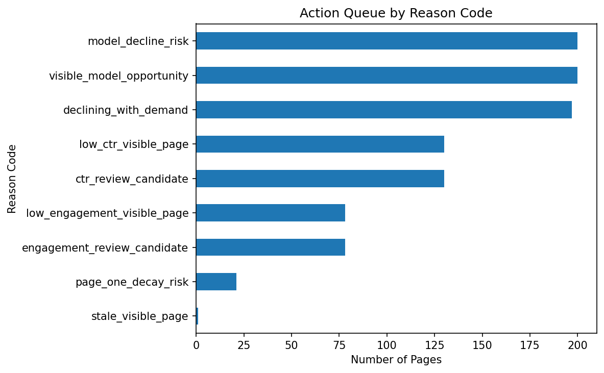

A time-aware Random Forest workflow for ranking pages for human review.
This project asks whether a learned ranking model can improve the prioritization of web pages for content-refresh review compared with a transparent baseline. The analysis uses FlyRank's pseudonymized content-performance warehouse and evaluates page-level future CTR using information available before the future evaluation window. A Random Forest regressor was developed using a chronological February-to-March development window and evaluated on a March-to-April future window. The Random Forest achieved a Spearman rank correlation of 0.17427 compared with 0.169878 for the Week-4 baseline, with MAE of 0.004545 and RMSE of 0.02583 on the evaluated CTR target. The resulting ranking is intended as directional decision support for human review rather than as a causal guarantee or an automatic content-refresh system.
Content teams often have more pages available for review than they can update at the same time. The practical problem is therefore how to decide which pages should receive attention first.
This project frames the task as a ranking problem. Instead of attempting to automatically decide whether a page should be changed, the system produces a prioritized queue that helps a human reviewer allocate limited editorial attention.
The central research question is:
Can a learned Random Forest ranking provide useful future-performance prioritization beyond the transparent Week-4 baseline?
The distinction between prediction and causation is important. A page receiving a high ranking does not mean that refreshing that page will necessarily cause its future performance to improve.
The analysis uses the FlyRank pseudonymized ML Internship dataset and its content-performance warehouse. The public research page reports aggregate information only and does not expose client names, raw URLs, private queries, or other private identifiers.
| Dataset component | Rows | Purpose |
|---|---|---|
fact_content_daily_performance |
78,835,655 | Daily content-performance signals |
dim_content |
519,606 | Content metadata |
dim_clients |
104 | Pseudonymized client metadata |
fact_content_query_90d |
2,414,248 | Aggregated query-level search information |
The final future evaluation contained 158,549 rows. The chronological design was used to preserve the distinction between information available for development and information observed later.
The published page intentionally excludes client names, raw URLs, private search queries, credentials, and other sensitive identifiers. The research page reports aggregate findings rather than exposing individual private records.
The learned model predicts future CTR for the evaluation window using signals available before that window. The resulting predictions are converted into a ranking for review prioritization.
The main learned model is a Random Forest Regressor. The model uses historical search-performance and content-related signals to estimate future CTR.
Important signals included historical search-performance measurements such as impressions, clicks, CTR, and average search position, together with available content and analytics signals.
The feature-importance analysis indicated that average position, impressions, and clicks were among the strongest reported signals. GA4 session and scroll signals contributed comparatively little in the reported model.
The model was compared with the transparent Week-4 prioritization baseline. The baseline provides a simple reference point so that the learned model is not evaluated in isolation.
The evaluation follows a chronological design: development uses the earlier February-to-March period, while final evaluation uses the later March-to-April period.
This design is intended to better represent the forward-looking setting in which a prioritization model would be used.
The Random Forest was evaluated on the March-to-April future window. The baseline and model ranking were compared on the same evaluation population.
| Metric | Week-4 Baseline | Random Forest |
|---|---|---|
| Spearman rank correlation | 0.169878 | 0.17427 |
| MAE | Not reported | 0.004545 |
| RMSE | Not reported | 0.02583 |
The Random Forest produced a modestly higher Spearman rank correlation than the transparent baseline in the measured future evaluation.
| Model-ranked group | Mean future CTR |
|---|---|
| Top 20 | 0.065211 |
| Top 100 | 0.055425 |
| Top 500 | 0.034707 |

Takeaway: the Random Forest showed a modest improvement in measured rank correlation over the transparent baseline.

Takeaway: average position, impressions, and clicks were among the strongest reported model signals.

Takeaway: the ranking is translated into explainable review prompts rather than automatic content actions.
The measured improvement over the baseline is modest. The Random Forest's Spearman correlation was 0.17427 compared with 0.169878 for the Week-4 baseline.
The appropriate interpretation is therefore directional decision support for human review.
No-go automation: the system should not automatically publish, rewrite, delete, or refresh content based only on the model ranking.
The analysis is stored in the project repository so that the workflow, notebooks, outputs, and figures can be inspected.
work/notebooks/capstone.ipynb
work/notebooks/
work/outputs/
work/figures/
The reported results should be reproduced from the committed notebooks and project artifacts rather than from manually entered values on this page.
The evaluation uses the documented chronological development and future evaluation windows, with the same evaluation population used for model and baseline comparison.
This project was completed as part of the FlyRank ML Internship.
Built on the FlyRank ML Internship dataset .
The public research page uses pseudonymized data and intentionally avoids exposing client names, raw URLs, private queries, credentials, or other private information.